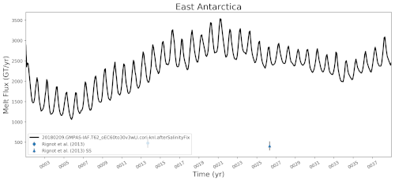

timeSeriesAntarcticMelt
An analysis task for plotting time series of mean melt rates per ice shelf or Antarctic region along with observations from Rignot et al. (2013), Adusumilli et al. (2020), and Paolo et al. (2023).
Component and Tags:
component: ocean
tags: timeSeries, melt, landIceCavities
Configuration Options
The following configuration options are available for this task:
[timeSeriesAntarcticMelt]
## options related to plotting time series of melt below Antarctic ice shelves
# list of ice shelves to plot or ['all'] for all 106 ice shelves and regions.
# See "regionNames" in the ice shelf masks file in regionMaskSubdirectory for
# details.
iceShelvesToPlot = ['Antarctica', 'Peninsula', 'West Antarctica',
'East Antarctica', 'Larsen_C', 'Filchner', 'Ronne',
'Filchner-Ronne', 'Brunt_Stancomb', 'Fimbul', 'Amery',
'Totten', 'Eastern_Ross', 'Western_Ross', 'Ross', 'Getz',
'Thwaites', 'Pine_Island', 'Abbot', 'George_VI']
# Number of months over which to compute moving average
movingAverageMonths = 1
# An optional first year for the tick marks on the x axis. Leave commented out
# to start at the beginning of the time series.
# firstYearXTicks = 1
# An optional number of years between tick marks on the x axis. Leave
# commented out to determine the distance between ticks automatically.
# yearStrideXTicks = 1
Ice Shelf and Region Names
The iceShelvesToPlot can be set to ['all'] to plot all 106 ice shelves
and regions (not recommended, as this is typically a waste of time). Otherwise,
it is a list consisting of any subset of the following ice shelves:
["Abbot", "Amery", "Atka", "Aviator", "Bach", "Baudouin", "Borchgrevink",
"Brahms", "Brunt_Stancomb", "Campbell", "Cheetham", "Conger_Glenzer",
"Cook", "Cosgrove", "Crosson", "Dennistoun", "Dibble", "Dotson",
"Drygalski", "Edward_VIII", "Ekstrom", "Ferrigno", "Filchner", "Fimbul",
"Fitzgerald", "Frost", "GeikieInlet", "George_VI", "Getz", "Gillet",
"Hamilton", "Hannan", "HarbordGlacier", "Helen", "Holmes", "HolmesWest",
"Hull", "Jelbart", "Land", "Larsen_B", "Larsen_C", "Larsen_D", "Larsen_E",
"Larsen_F", "Larsen_G", "Lazarev", "Lillie", "Mariner", "Matusevitch",
"Mendelssohn", "Mertz", "Moscow_University", "Moubray", "Mulebreen",
"Myers", "Nansen", "Nickerson", "Ninnis", "Nivl", "Noll", "Nordenskjold",
"Pine_Island", "PourquoiPas", "Prince_Harald", "Publications", "Quar",
"Rayner_Thyer", "Rennick", "Richter", "Riiser-Larsen", "Ronne", "Western_Ross",
"Eastern_Ross", "Shackleton", "Shirase", "Slava", "SmithInlet", "Stange",
"Sulzberger", "Suvorov", "Swinburne", "Thwaites", "Tinker", "Totten",
"Tracy_Tremenchus", "Tucker", "Underwood", "Utsikkar", "Venable", "Verdi",
"Vigrid", "Vincennes", "Voyeykov", "West", "Wilkins", "Wilma_Robert_Downer",
"Withrow", "Wordie", "Wylde", "Zubchatyy"]
or these regions made up of 2 or more ice shelves:
["Antarctica", "Peninsula", "West Antarctica", "East Antarctica", "Ross",
"Filchner-Ronne", "IMBIE1", "IMBIE2", "IMBIE3", "IMBIE4", "IMBIE5",
"IMBIE6", "IMBIE7", "IMBIE8", "IMBIE9", "IMBIE10", "IMBIE11", "IMBIE12",
"IMBIE13", "IMBIE14", "IMBIE15", "IMBIE16", "IMBIE17", "IMBIE18", "IMBIE19",
"IMBIE20", "IMBIE21", "IMBIE22", "IMBIE23", "IMBIE24", "IMBIE25", "IMBIE26",
"IMBIE27"]
The default list of ice shelves and regions was determined to highlight the largest ice shelves and regions along with a representative sample of smaller shelves from different regions.
Most of these regions are determined based on the centroid locations given in the supplementary material of Rignot et al. (2013). Ice shelf regions have been extended into grounded ice and onto the Antarctic continental shelf based which floating ice shelf is closest. The IMBIE Basins are defined following Zwally et al. (2012)
Note
Time series are computed and stored in a NetCDF file for all 106 ice shelves
and regions even if only a subset are plotted, allowing you to plot
additional ice shelves externally or by re-running MPAS-Analysis. These
can be found in timeseries/iceShelfAggregatedFluxes.nc within your output
base directory
Other Options
Observations
Example Result
{kind=link}
